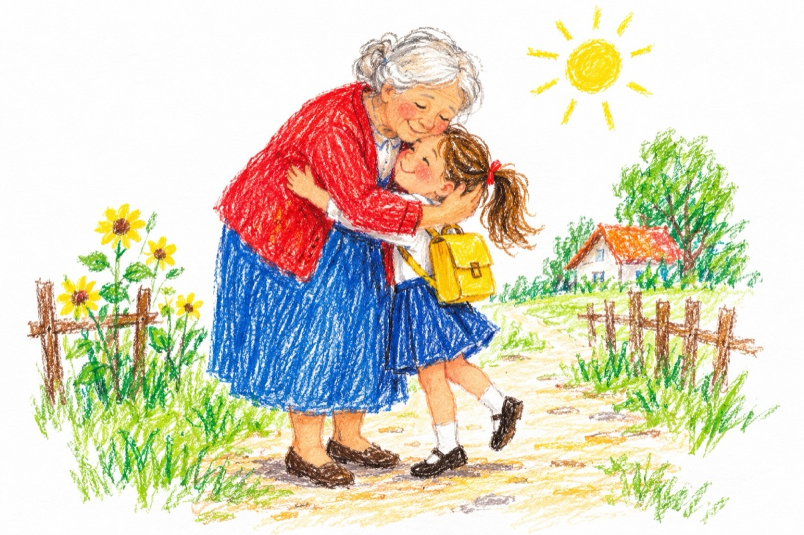

Bunicuța
Bunica-i precum argintul,
Harnică-i ca o furnică,
Ea m-a învățat Cuvântul,
De când eram foarte mică.
Cu povești ea mă adoarme
Cu voinici ce-nving un zmeu,
Ne-nchinăm la vechi icoane
Și-mi veghează somnul meu.
Acuma sunt deja mare
Dar când revin de la școală
Ea mă-ntâmpină-n cărare
Cu rostirea ei domoală
Bunicuța mea cea bună
Are părul ca de-argint
Ea în juru-I ne adună
Cu al dragostei alint.
Vasile Groza